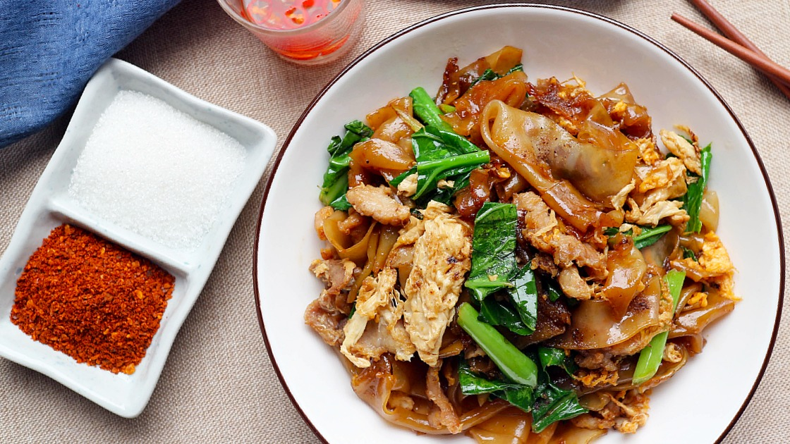

ผัดซีอิ๊วหมูหมัก

คำว่า “ผัดซีอิ๊ว” มาจากภาษาจีนกวางตุ้งที่แปลว่า “ผัดกับซอสถั่วเหลือง” โดยมักใช้ก๋วยเตี๋ยวเส้นใหญ่ ผัดในกระทะจีนที่ร้อนฉ่ากับซีอิ๊วขาว ใส่ซีอิ๊วดำเพื่อความหวานและทำปฏิกิริยากับกระทะร้อน ๆ ให้เกิดรสชาติและกลิ่นที่มีความคาราเมล และมีสีที่น่ากินยิ่งขึ้น เส้นก๋วยเตี๋ยวอาจจะดูเหมือนไหม้ แต่นั่นแหละคือสูตรลับที่เติมความหอมอร่อยน่ากินสุด ๆ
ผัดซีอิ๊วหมูหมัก สำหรับ 1 ที่
วัตถุดิบ
- เส้นใหญ่ 120 กรัม
- หมูหมัก 100 กรัม
- ไข่ไก่ 1 ฟอง
- คะน้า 60 กรัม
- น้ำมันหอย 2 ช้อนโต๊ะ
- ซีอี๊วขาว 1 ช้อนชา
- น้ำตาล 1 ช้อนชา
- พริกไทย ครึ่งช้อนชา
- เกลือ ครึ่งช้อนชา
- ซีอิ๊วดำ ครึ่งช้อนชา
TOP
วิธีทำ
- เปิดเตา ใช้ไฟกลางอุ่นกระทะให้ร้อน
- ตั้งหม้อ ต้มน้ำเปล่าสำหรับลวกผัก
- กระทะร้อนแล้วใส่น้ำมันพืชพอประมาณ
- ใส่ไข่ไก่ ผัดจนฟู และตามด้วยเส้นใหญ่ คั่วจนหอม
- ลวกหมูและคะน้าให้สุกในหม้อต้ม
- นำหมูและผักสะเด็ดน้ำให้แห้ง ลงกระทะผัดรวมกับเส้นใหญ่
- ปรุงรสตามสูตร ผัดให้เครื่องปรุงเข้ากันและมีกลิ่นหอม
- จัดจาน พร้อมเสิร์ฟ
TOP
ตารางโภชนาการ
| สารอาหาร |
ปริมาณ (โดยประมาณ) |
หน่วย |
| พลังงาน |
420-450 |
กิโลแคลลอรี่ |
| โปรตีน |
25-30 |
กรัม |
| ไขมัน |
12-15 |
กรัม |
| คาร์โบไฮเดรต |
50-55 |
กรัม |
| ใยอาหาร |
2-3 |
กรัม |
| โซเดียม |
800-1,000 |
มิลลิกรัม |
TOP
ดูวิธีทำผัดซีอิ๊วเพิ่มเติม
Comment
Home